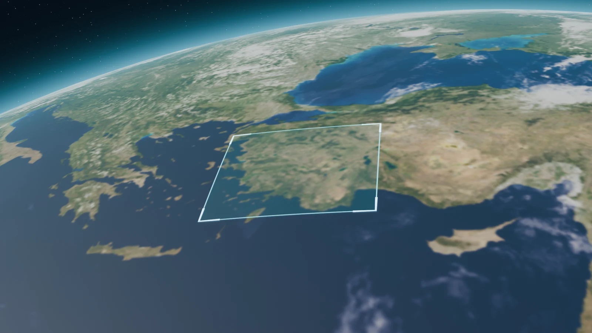

Earth data. Evidence. Priority.
Know where to look next.
OrbGSS turns Earth observation and geoscience data into evidence-backed spatial priorities that help teams decide where to investigate next.
- 01Elevation — NASADEM context
- 02THM-01 Thermal Anomaly
- 03ALT-01 Alteration Proxy — clay/hydroxyl
- 04Remote-Sensing Relative Priority — Experimental Baseline
Kızıldere — Büyük Menderes graben, Denizli, Türkiye 37.9794° N, 28.7907° E Rendered orbital sequence — not sensor imagery
02 · The place
A real area, before any analysis.
Kızıldere sits in the Büyük Menderes graben in Denizli, Türkiye. This is the area as Landsat 8 photographed it — the ground the whole pilot is registered to, before a single layer is derived from it.
Earth-observation context only. This is a natural-colour photographic composite of the area, not analytical evidence, not a scored input, and not the acquisition date of any THM or ALT evidence layer.

03 · The evidence
Three layers over the same ground.
Relief for context, one Landsat thermal anomaly and one Sentinel-2 alteration proxy as evidence. Same area of interest, same 30 m grid, same story stage — which is what makes them comparable at all.
-
Elevation — NASADEM context Context Context and display only. Terrain is not a scored predictor and carries no universal geothermal-favourability direction. -
THM-01 Thermal Anomaly Evidence Evidence layer only. Do not describe it as geothermal probability, reserve, discovery, or drilling-success evidence. -
ALT-01 Alteration Proxy — clay/hydroxyl Evidence Broad Sentinel-2 spectral alteration proxy; not mineral/kaolinite identification and not proof of hydrothermal alteration.
Data gap Structural and geological evidence would sharpen interpretation here. OrbGSS has no public-safe fault or lithology layer for this baseline, so the gap is stated rather than filled — it is optional support and does not change the priority result. How the layers are built
04 · The result
Where to look first.
The thermal and alteration evidence is combined into one ranking surface across the area of interest, 0 to 100, so a team can order the ground instead of guessing at it. High values mean "look here before there" — inside this area, for this baseline.
AOI-relative experimental screening only. Not probability, reserve/resource estimation, discovery likelihood, drilling-success likelihood, Full Prospectivity, or a calibrated cross-AOI score.
Read the pilot methodPilot
Geothermal first.
Geothermal exploration is where OrbGSS is applied first. Mineral exploration and environmental & land intelligence follow the same evidence-to-priority workflow and are expansion directions, not finished products.
-
01
Geothermal Exploration
Active · First applicationEvidence-backed prioritization of geothermal exploration areas.
-
02
Mineral Exploration
Expansion directionThe same workflow extended to mineral exploration targets.
-
03
Environmental & Land Intelligence
Expansion directionLand and environmental change read as spatial evidence.
Company
OrbGSS — Orbital Geo-Spatial Solutions
OrbGSS is a geospatial-intelligence platform built by VirgaSoft. It exists to make exploration and land decisions evidence-based, traceable and easier to prioritize.
Built by VirgaSoft
How we work
- Traceable provenance Every output can be followed back to its source data.
- Explicit data gaps Missing or weak inputs are shown, not hidden.
- Evidence-based outputs Priorities are derived from mapped evidence, with the reasoning attached.
- Decision support, not replacement OrbGSS helps decide where to investigate. Field investigation remains necessary.
Contact
For pilot, partnership and technical conversations.